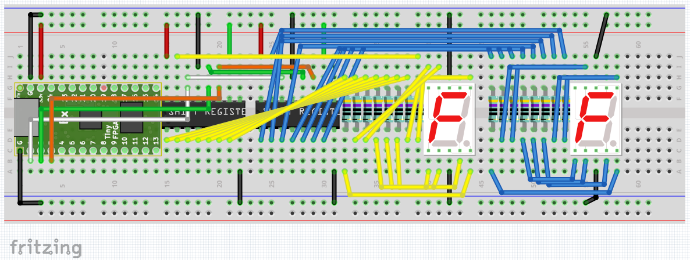
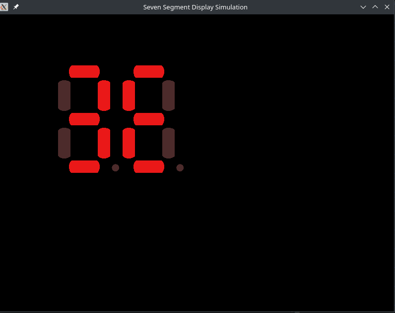
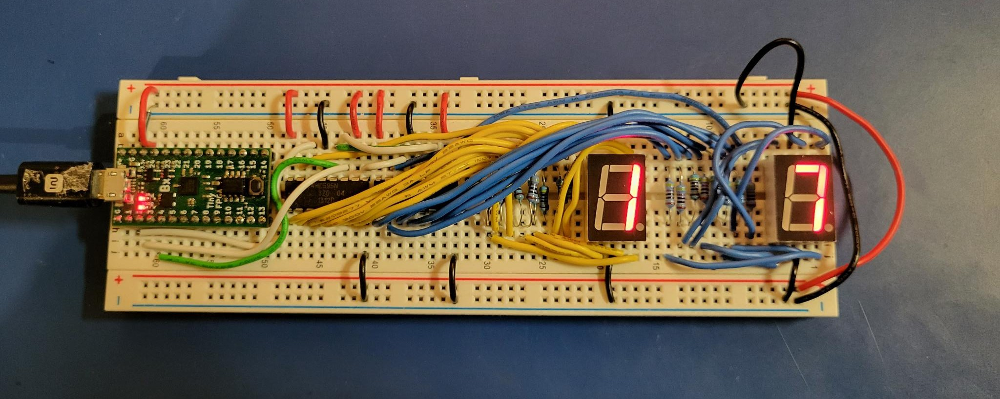
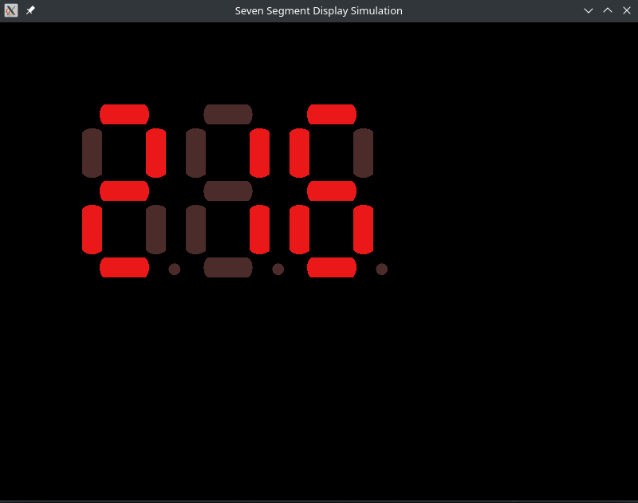
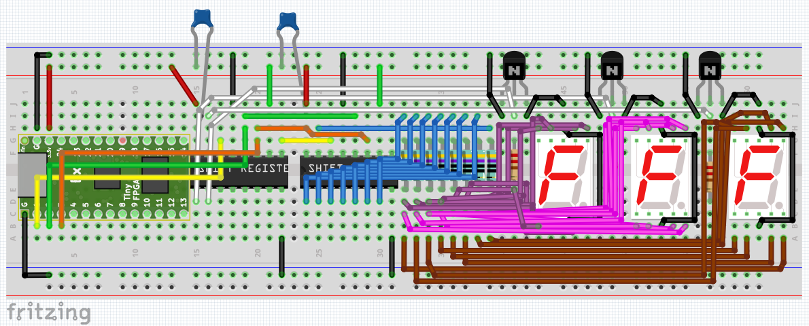
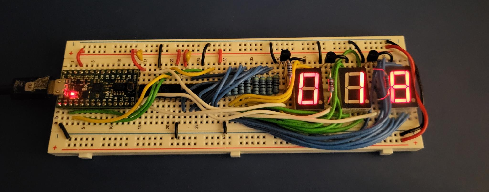

FPGA design for Software Engineers, part 4 - Multiplexed Seven Segment Displays
Jeff DeWall 11 min read April 23, 2023 #FPGA #VerilogThis time we'll continue from the last design article and add in the ability to drive multiple seven segment displays.
Article Series
- Verilog and State Machines
- Simulation and Build Tools
- Seven Segment Displays
- Docker Builds
- Build System Updates, ECP5 Support
- Time-Multiplexed Seven Segment Displays
Driving multiple displays
So we can drive a single seven segment display with only 3 pins of our FPGA using a shift register, but what if we want to have two or more displays? Do we need 3 pins for each? It turns out that since we can chain shift registers together, we can connect up multiple segments using just our same 3 pins.
In our first example, we'll daisy chain the segments together, so that each seven segment display is driven by its own shift register:
By chaining each register's shift out bit into the next register's data in bit, we effectively create a longer shift register.
Looking in the 04_seven_seg_shift_reg_multi example, you can can see how this looks. The code is mostly the same as our 03_seven_seg_shift_reg example, except that we change some constants and add an extra hex to seven segment decoder module instance for the extra display:
// look in pins.pcf for all the pin names on the TinyFPGA BX board
// drive USB pull-up resistor to '0' to disable USB
assign USBPU = 0;
reg [31:0] counter;
`ifdef SIMULATION
= 10;
= 10;
= 0;
`else
= 22;
= 22;
= 12;
`endif
= START_SEG_1_BIT + 3;
= TOP_SEG_1_BIT + 1;
= START_SEG_2_BIT + 3;
wire [15:0] seg_out;
wire sh_ds, sh_clk, sh_latch;
reg shift_reg_clock = 0;
reg shift_toggle = 0;
// Create a 16 bit (2^4) shift register.
// increment the counter every clock
always @(posedge CLK) begin
counter <= counter + 1;
shift_reg_clock <= counter[CLOCK_BIT];
shift_toggle <= counter[START_SEG_1_BIT];
end
// light up the LED according to the pattern
assign LED = counter[LED_BLINK_BIT];
assign PIN_1 = sh_ds;
assign PIN_2 = sh_clk;
assign PIN_3 = sh_latch;
`ifdef SIMULATION
assign o_seg_out = seg_out;
//assign o_num = counter[TOP_SEG_2_BIT:START_SEG_1_BIT];
`endif
The main changes to note:
- We extended the size of the shift register module to 16 bits to accomodate having two seven segment displays
- We setup our constants to use
START_SEG_1_BITto derive the other constants for the end of segment 1, and the start and end of segment 2's bits from our extended counter variable. - We also, as mentioned, added a second hex to seven segment decoder instance which is fed into the shift register with the other decoder instance to make up the 16 bits of data to shift out.
In our simulation code, everything is mostly the same apart from having an extra segment to display and some positioning code for the virtual seven segment display.
If you build and run the simulation you should see two segments counting up:
Building the circuit
Breadboarding out the circuit is straight forward, if not a touch tedious. You need resistors for each segment, so you end up with 16 of them plus the two displays and two shift registers.
If you follow the breadboard schematic above, you will end up with the following:
If you deploy the circuit, you'll see the digits couting up as you would expect:
Another Way: Time Multiplexing
While we could just continue to daisy-chain multiple shift registers together with each one outputting to a display of its own, we would need one shift register per display, and each segment within a display needs its own current limiting resistor, which adds up. In some cases we may be more sensitive to part counts in our projects to complete our project. With less parts it will be cheaper to build and require less space.
If we want to have more seven segment displays but want the least number of components we can do something a bit clever and time-multiplex them. That just means we'll use one shift register for the current display value, and one shift register to round-robin enable each display in turn, one by one.
So, one shift register will show the currently enabled display's segments and the second shift register will act as an enable mask, with each bit being assigned to a different display. This allows us to drive up to eight displays with just two shift registers. Because only one display will be driven at a time, we can also get away with only eight resistors in total, rather than eight per display.
This works because the human eye can't perceive the quick on and off cycling as long as we cycle through the displays fast enough. The downside is of course that since we are switching between each display, there is less time that each display is actively on, and so will appear dimmer overall.
For the second shift register that controls which display is on, we'll use what's called "one-hot" encoding. This just means that we convert from the binary value of our counter rotating through which display should be on and create an enable mask where only one bit is on and all of the others are zero. It will end up looking like we shift a bit from the 0th position through to the nth bit position and then repeating.
In our case we will have the following encoding:
| Counter | One-hot Encoded Value |
|---|---|
| 00 | 001 |
| 01 | 010 |
| 10 | 100 |
We can use that on/off signal to operate a transistor as a switch to selectively connect one display at a time. That means each display will now have a transistor in between it's common pin to accomplish this. In our case this common pin is the ground since I'm using common ground seven segment displays.
In our test circuit we'll set up 3 seven segment displays and so the first 3 bits of our control shift register will be the enable bit for each display in turn.
One-hot encoder design
Let's start with the one hot encoder design as it's pretty straight-forward. We simply need to take in a counter value, 0 to 7, and output the bit that corresponds to that value, effectively mapping the 3 bit counter to one of 8 bits on the output.
= 3;
= 1<<DATA_WIDTH;
input [DATA_WIDTH-1:0] i_val;
output reg[DATA_SIZE-1:0] o_one_hot_val;
reg [DATA_WIDTH:0] ii;
always @(*)
begin
for(ii = 0; ii <= DATA_SIZE; ii++)
begin
if({1'b0, i_val} == ii) o_one_hot_val = 1 << ii;
end
end
Notice here we're making use of the Verilog for loop construct. This is different than loops in procedural languages like C or C++, in that it is not designing a circuit that runs over clocks cycles, we do that ourselves with state machines as descibed in the first article.
Instead, a Verilog for loop is more akin to a meta-programming construct in that it instantiates N iterations of the body in the actual circuit. The above is equivalent to us hand unrolling the loop and write each of the if({1'b0, i_val} == ii) ... statements by hand replacing ii with the current bit we are checking for.
The Time-Multiplexed Code
// look in pins.pcf for all the pin names on the TinyFPGA BX board
// drive USB pull-up resistor to '0' to disable USB
assign USBPU = 0;
reg [31:0] counter;
`ifdef SIMULATION
// When running the simulation, we will lower the number of cycles to make
// it easier to read the waveform output.
= 10;
= 6;
= 10;
= 0;
`else
// On the real board, our clock is 16MHz, so in order to see the LED pattern
// we need to consider how many cycle ticks we should have. In our case
// 16*1000*1000 is one second, which is roughly when the 24th bit toggles.
// We'll use that as our algorithm's tick delay.
= 20;
= 12;
// We want the blink pattern to be 4 times per update tick, aka 2 bits less.
= 22;
= 6;
`endif
wire [7:0] seg_out;
wire sh_ds, sh_clk, sh_latch;
reg [2:0] digit_counter = 0;
wire [1:0] which_digit;
assign which_digit = digit_counter [2:1];
reg last_time_bit_val =0;
/* verilator lint_off UNUSED */
reg [11:0] debug_count;
/* verilator lint_on UNUSED */
// The values of the current hex digit we're displaying.
reg [3:0] curr_digit_values;
/* verilator lint_off UNUSED */
reg [1:0] curr_digit_selected;
/* verilator lint_on UNUSED */
wire [7:0] curr_digit_selected_one_hot;
wire [15:0] shift_reg_value;
// We only need one seven-segment decoder, since it will be multiplexed
// over time to show the correct digit.
reg shift_reg_clock = 0;
reg shift_toggle = 0;
// Create a 16 bit (2^4) shift register.
// Update our counter and the logic on which digit of our 3 segments
// we want to send out through the shift register.
always @(posedge CLK) begin
counter <= counter + 1;
shift_reg_clock <= counter[CLOCK_BIT];
shift_toggle <= counter[TIME_TICK_BIT];
if(last_time_bit_val == 0 && counter[TIME_TICK_BIT] == 1'b1) begin
//debug_count <= counter[START_SEG_1_BIT +: 12];
curr_digit_values <= counter[START_SEG_1_BIT+which_digit*4 +: 4];
curr_digit_selected <= which_digit;
digit_counter <= digit_counter + 1;
if(digit_counter == 6) begin
digit_counter <= 0;
end
end
// else if(last_time_bit_val == 1 && counter[TIME_TICK_BIT] == 1'b0) begin
// end
last_time_bit_val <= counter[TIME_TICK_BIT];
end
// light up the LED according to the pattern
assign LED = counter[LED_BLINK_BIT];
assign shift_reg_value = (digit_counter[0] == 1) ? {seg_out, curr_digit_selected_one_hot} : 16'b0;
assign PIN_1 = sh_ds;
assign PIN_2 = sh_clk;
assign PIN_3 = sh_latch;
assign PIN_4 = curr_digit_selected_one_hot[0];
assign PIN_5 = curr_digit_selected_one_hot[1];
assign PIN_6 = curr_digit_selected_one_hot[2];
`ifdef SIMULATION
assign o_seg_out = shift_reg_value;
//assign o_num = counter[TOP_SEG_2_BIT:START_SEG_1_BIT];
`endif
Things to note in the code:
- There is still a 16 bit shift register instantiated.
- We now have a single hex to seven segment display encoder, which is used for the bottom 8 bits of our shift register value.
- The top 8 bits of our shift register is filled with the value of the one hot encoder value
- Our counter logic resets the one-hot encoder value every six cycles - one cycle for each display to be on and one cycle in between to keep all of the displays off to mitigate the ghost digit display mentioned below.
Running the simulation, you'll see the digits counting up very fast so that we can see the third digit change in a reasonable amount of time:
Building the circuit
Using NPN or PNP transistors as a switch.
So we have a signal from our one-hot encoder shift register to tell us whether a particular display should be enabled or not, but what does that look like on the circuit?
We can make use of a transistor as a switch. In this case I'm using Bipolar Junction transistors, so I connect my NPN ones up such that the collector is connected to the ground rail, and the emitter is connected to the ground/common pin of a seven segment display. The base is connected to the enable signal for that display, meaning that when that signal is low, the transistor won't allow current to flow, and when it is high it will. This lets us disconnect the seven segment display from the circuit by breaking its path to ground through the transistor as a switch.
Issues I ran into
Ghost Digit Display
Once again, the simulation for this was working perfectly, but when I deployed the initial circuit, the display rather than looking solid, were blurry and seemed like there were ghost images. I knew the logic was doing what I wanted and I could see the values counting too so I knew there was something wrong at the electrical level.
I first checked all of the connections, making sure that ground was properly connected and nothing was floating, but that was all fine. I tried switching out to different seven segment displays thinking maybe I had burned them out at some point: no luck. I tried using a MOSFET instead of a BJT and I still had the same problem.
I had already checked the timing on the shift registers from the last article, so I was within bounds on the timing constraints there and so was at a loss of what was wrong after a few hours of fiddling around and trying different things (and also triple checking all of the simulation logic).
I finally looked around the internet to see if someone else had done a similar project and found an article where the same type of multiplexing was being done but using an Arduino. Looking at the code in the article I noticed the one difference was that they had a full cycle where nothing was displayed on any of the segments in between turning each one on. Changing the one-hot encoder counter to switch off every other cycle fixed the problem completely! What was happening is that the encoder would swap the next display on, but there was still some current flowing from the old display register into the new one as it switched over to display its new value. The effect was that I got a ghost of the previous digit on the current digit's display. By giving the current digit some time to let the last digit value drop off, everything started working properly.
Other Tweaks
A couple of other tweaks I discovered helped the circuit work better, which means brighter and less flickering as we cycle through the enabled displays:
- I added a capacitor between the power rail and the power pin of the shift register. This is meant to help keep the power to the shift registers a bit more stable as we're quickly changing the amount of power each needs to source.
- I also used a resistor to connect the top common pin of each seven segment display to the bottom one. I originally used a wire to connect the two, but read on a forum that it could be safer to use a resistor.
Reviving the Breadboard Circuit Three Years Later
I first built up this circuit about three years ago, and didn't get around to taking pictures for the article. When I tried to load the design again, the displays were dim and flickering. I probed the various power and ground rails to make sure the connections were good and found some flakey parts, probably some the wires being a bit short and having some build up over time that made the connections not too great. Cleaning up the wires a bit, swapping a few out and using a really fine sand paper to touch clean the connections on a few components did the trick.
The Time-Multiplexed Breadboard Circuit
Deploying this, you should see the counter spanning across all three segments.
Next Time
The plan for next time is to explain the UART serial receiver/transmitter that I built some time ago. I would say it will be up soonish, but I know how that turns out.